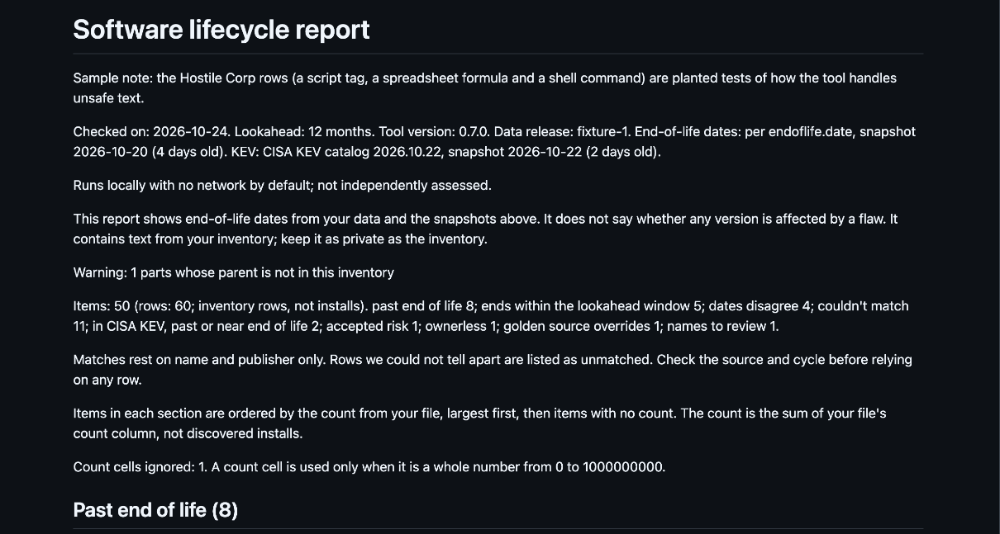

software-lifecycle
Reads a software inventory export and lists what is past end of life or close to it. It also flags items whose vendor and product appear in CISA's Known Exploited Vulnerabilities (KEV) catalog, so a person can review them first.
Runs locally with no network by default; not independently assessed.
Who built this and why
I'm Eve McGivern. I run IT application governance for a large global company: the application register, owner assignment, quarterly application audits, and the evaluation of IT service management and IT asset management tools. I started in technical business analysis.
Lifecycle tracking is harder than it looks. Export names rarely match the names vendors publish. End-of-life dates sit on vendor pages in different formats. One product has many release lines, each with its own date, and a date means nothing until you match the right one. A quarterly review also needs evidence, not a guess. Commercial catalogs solve this, but not every team has one, and many inventories can't leave the building. I built this for those teams: offline, plain files, and honest about what it can't match.
See it in a minute
Run this from the repo root:
python3 software_lifecycle.py check examples/software-inventory.csv --data tests/fixtures/data --as-of 2026-10-24 --golden examples/golden-sources.csv --exceptions examples/exceptions.csv --tracking examples/tracking.csv --support-records examples/support-records.csv --out ../swlc-demoThe tool prints exactly one line:
Wrote report.json, report.md, report.csv to ../swlc-demoThe demo uses made-up data, so the output never changes with the date. Real inventories are confidential: read Confidential inventories before you run your own.

The full set, with the KEV items, is on Start. Read the full sample report on GitHub.
Start here
Pick the row that fits you.
| I want to... | Go to |
|---|---|
| Run it myself in a terminal | Start, then the quick start |
| Have an AI assistant run it for me | Assistant setup |
| Let Claude Desktop or the ChatGPT desktop app run only the counts, through a small local server | MCP setup. Optional, advanced. Tested once on one Mac, with parts Unverified. |
| Understand a report | How to read a report |
| Check privacy | Privacy, security and limits |
| Export from Flexera, ServiceNow or Rapid7 | Platform guide |
Real inventories are confidential. Whoever runs the tool, read Privacy, security and limits first.
Quick answers
What is KEV?
KEV is the Known Exploited Vulnerabilities catalog, a list kept by CISA, the US government's cybersecurity agency.
What is an SBOM?
An SBOM is a software bill of materials: a list of the parts inside one piece of software. This tool does not read SBOM files.
How often is the data updated?
The KEV check runs daily and the end-of-life job weekly. End-of-life dates reach users after the maintainer merges the weekly pull request. The project is maintained as time allows, so a run can be late.
What it is not, and when not to use it
If you already run Flexera, ServiceNow or Rapid7, you likely have a wider catalog. This tool covers only the products endoflife.date lists. Dates come from endoflife.date unless a golden-sources file overrides them.
The tool never says "vulnerable". A match in CISA KEV means "needs review" and nothing more.
Status
This is an experiment with a review date of 2027-01-31. It is maintained as time allows, best effort, no SLA, not independently assessed.
It needs Python 3.9 or newer and nothing else: the standard library only, nothing to install. It was tested on macOS and Linux. Windows is not a supported platform yet. The licence is MIT.